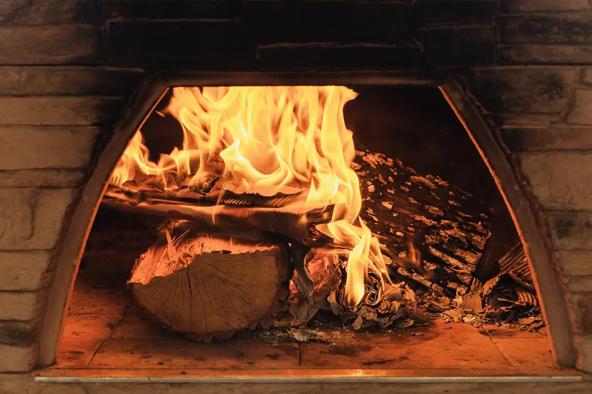

Our dough
Drag and watch 48 hours.
The dough waits two days. Move the slider and see where it is at each hour.
Why wait
Time is the cheapest ingredient.
Cold fermentation is slow and costs planning: Thursday dough is made on Tuesday. In return, the crust comes out golden with more wheat flavor, without sugar in the recipe.

Photo: oakwoodfirepizza.com, CC BY-SA 4.0, Wikimedia Commons